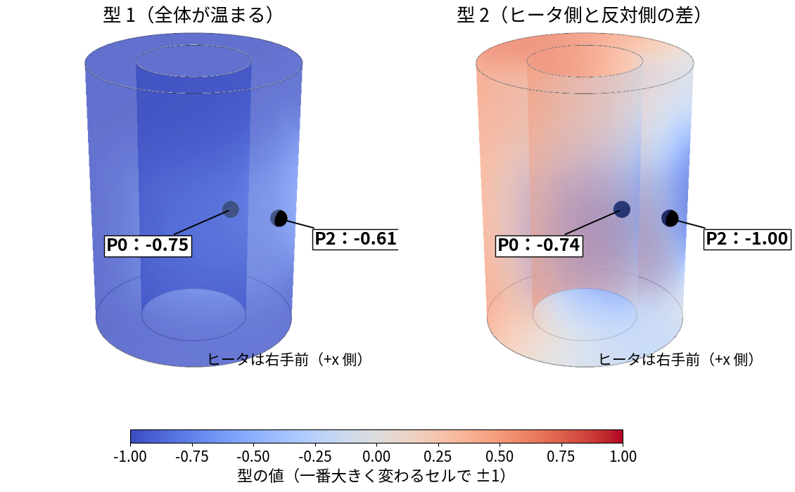
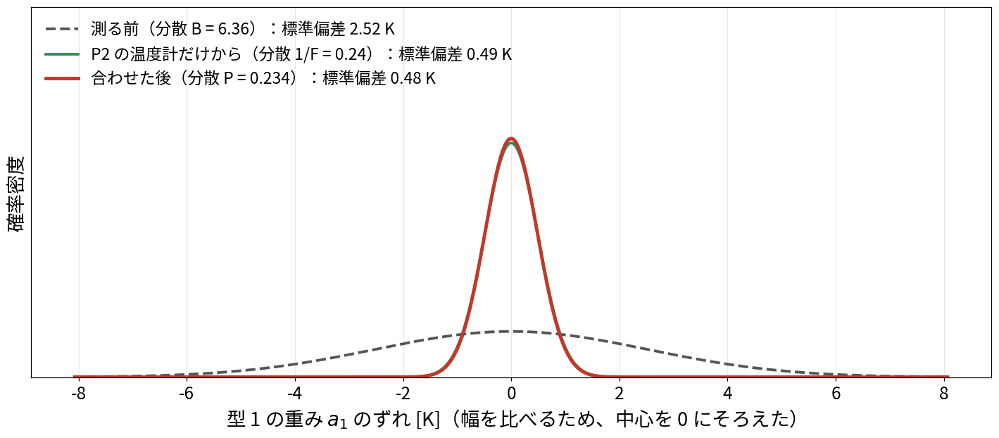
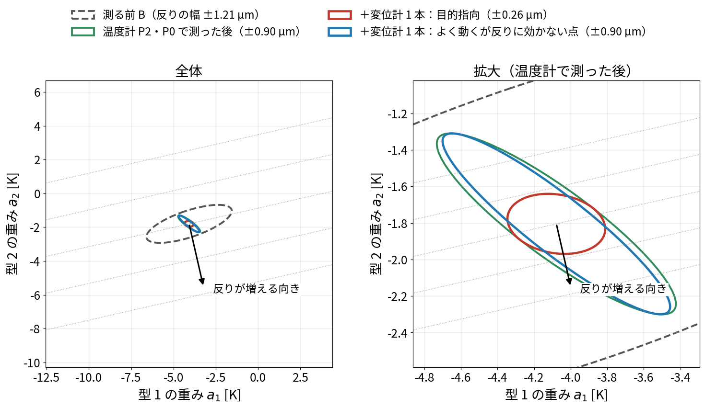
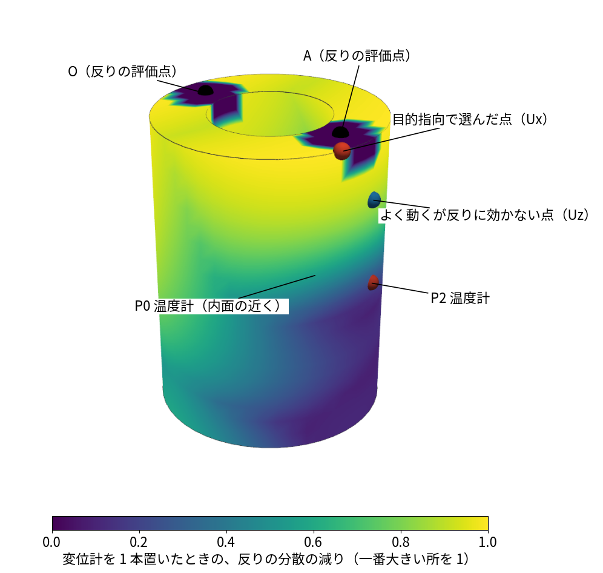
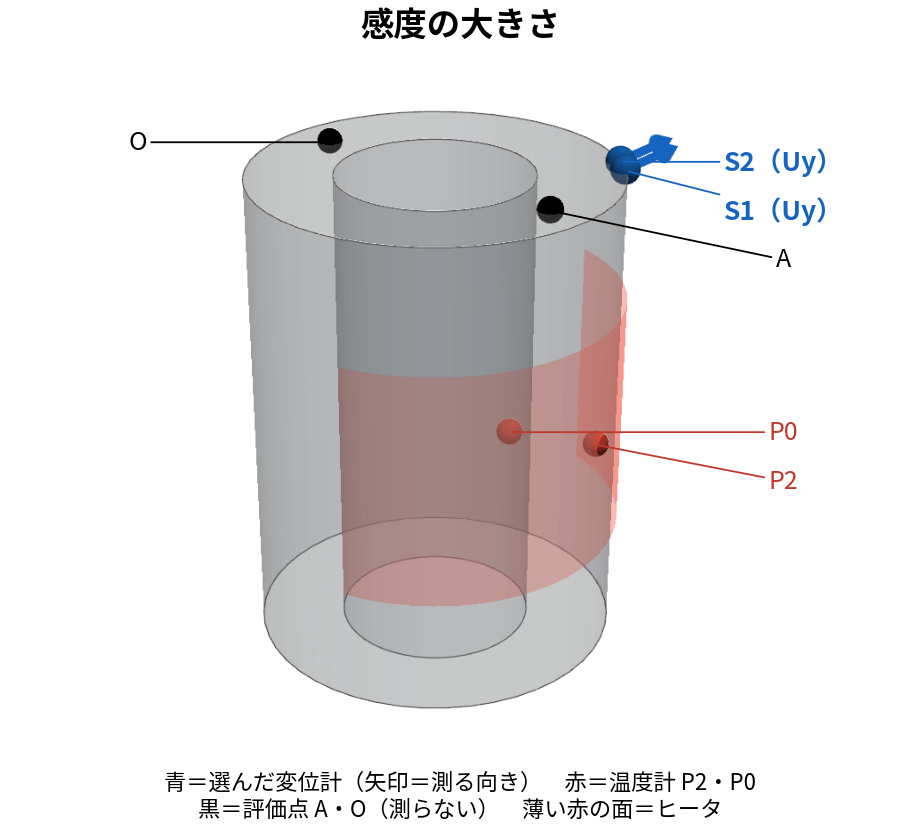
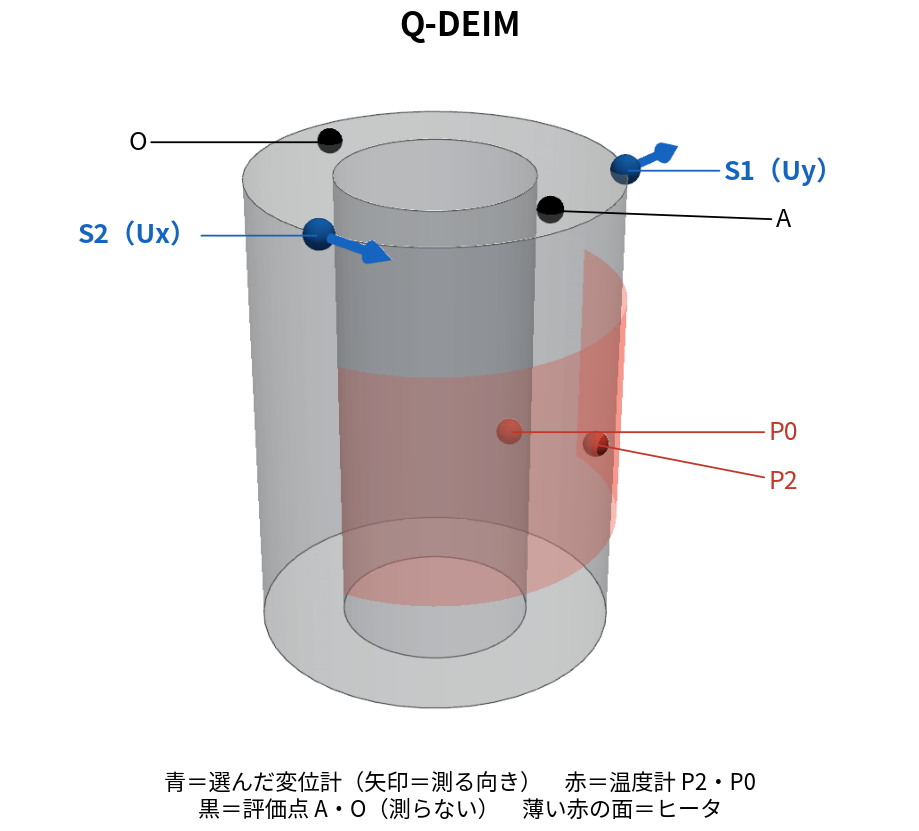
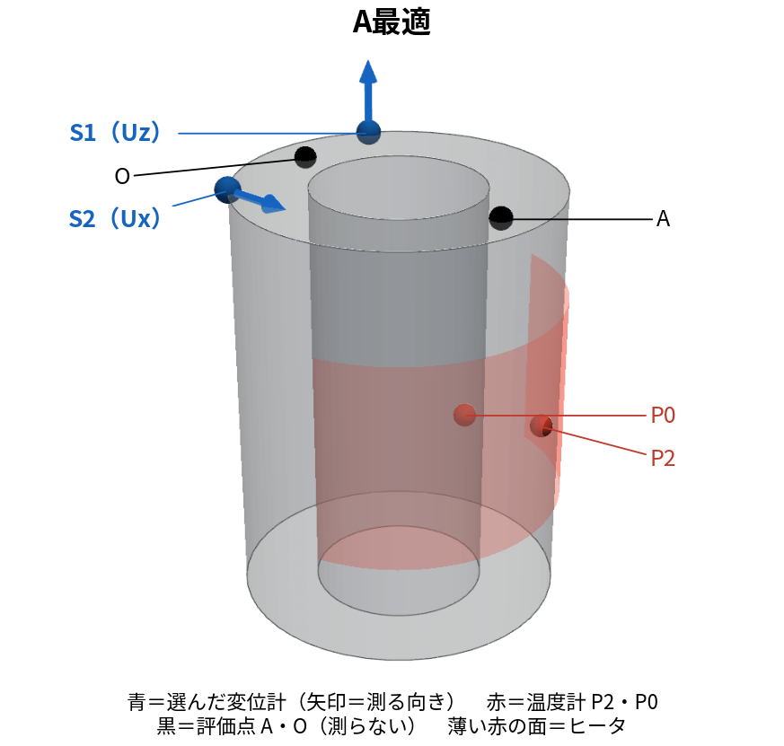
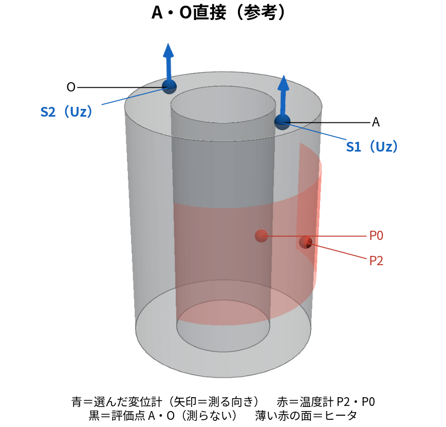

目的は、直接測れない2点A・Oの上下変位差（反り）を、少数の温度計・変位計から正確に推定することです。そこで、どこを測ると反りの推定誤差を小さくできるかを、設置前に計算します。
フィッシャー情報とは、一言でいうと「知りたい量の違いが、測定ノイズに埋もれず、どれだけ測定値に表れるか」を示す指標です。 同じ未知量なら、感度が大きく、ノイズが小さい測定ほど情報が多くなります。未知量が複数なら、それぞれの違いを区別できるかも重要です。
発表スライドでは、こう伝えます。
反りの推定精度を高めるセンサ位置を、計算で選ぶ。
各候補の感度と観測ノイズから情報量を求め、反りの推定誤差が小さくなる位置・測定方向を選ぶ。
温度センサも変位センサも、この計算で選べます。ただし、本記事の既存結果は、温度計P2・P0を固定し、追加する変位センサ2本を選んだ試験です。温度2点から順に選ぶ試験はblog_009で扱っています。この区別をしたうえで、文字式から選定手順まで説明します。
反りを、AとOの上下変位の差として定義します。
\[ d(t)=U_z(A,t)-U_z(O,t). \]
A・Oは観測に使わず、別の場所の温度・変位から反りを推定します。A・Oの正解値は、最後の精度評価にだけ使います。
| 記号 | 意味 |
|---|---|
| \(a_1,a_2\) | 温度分布を表すPODモードの係数。説明ではまずこの2個を未知量とする |
| \(c\) | 候補センサ。変位計では「場所と方向」の組合せ |
| \(y_c\) | センサ測定値から、その場所の基準値を引いた量 |
| \(h_{c,j}\) | 係数 \(a_j\) が変わると候補 \(c\) の値がどれだけ変わるかを表す感度 |
| \(r_c\) | 候補 \(c\) の観測ノイズの分散 |
| \(F\) | 観測から得られるフィッシャー情報。複数未知量なら行列 |
| \(B\) | 観測前の未知量の共分散 |
| \(P\) | 観測を使って推定した後の、未知量の推定誤差の共分散 |
\(h_{c,j}\) はセンサ感度であり、放熱パラメータ \(h_{\mathrm{ROM}}\) とは別です。共分散行列 \(P\) と、代表点名P0〜P4も区別します。
PODは温度分布を「平均温度場＋モードの足し合わせ」で近似します。
\[ \underbrace{\mathbf T}_{N\times1}\approx \underbrace{\overline{\mathbf T}}_{N\times1} +\underbrace{\begin{bmatrix} \varphi_1[1]&\varphi_2[1]\\ \varphi_1[2]&\varphi_2[2]\\ \vdots&\vdots\\ \varphi_1[N]&\varphi_2[N] \end{bmatrix}}_{\Phi:\ N\times2} \underbrace{\begin{bmatrix}a_1\\a_2\end{bmatrix}}_{\mathbf a:\ 2\times1}. \]
\(N\) はOpenFOAM固体セル数、\(\overline T[i]\) はセル \(i\) の時間平均温度、\(\varphi_j[i]\) はモード \(j\) のセル \(i\) での値です。平均温度場は、全空間に共通する温度1個ではありません。
図では、各モードを「絶対値の最大が1」にそろえ、係数 \(a_1,a_2\) の単位をKにしています。
2モードにしたのは説明のためです。未知量が2個なら行列が2×2になって手計算でき、不確かさを楕円で描けます。実際の選定（§8）は5モードで計算しています。5モードで同じ計算をすると、一番よい変位計は (−36.2, 9.7, 100.5) mm の Uz になり、2モードの答え（(36.2, −9.7, 100.5) mm の Ux）とは変わります。

黒い球がP2・P0。モードの符号は係数と組で使います。負の色だけから、その点の温度が下がるとは判断しません。
セル \(c\) に温度計を置くと、そのセルの行を取り出します。
\[ T[c]\approx\overline T[c]+\varphi_1[c]a_1+\varphi_2[c]a_2. \]
測定値を \(T^{\mathrm{obs}}[c]\)、ノイズを \(\varepsilon_c\) とすると、
\[ y_c\equiv T^{\mathrm{obs}}[c]-\overline T[c] =\underbrace{\varphi_1[c]}_{h_{c,1}}a_1 +\underbrace{\varphi_2[c]}_{h_{c,2}}a_2+\varepsilon_c. \]
温度計の感度は、その位置でのPODモードの値です。 数値を代入せずとも、どの係数がどの重みで測定値に現れるかを読めます。
線形熱弾性では、同じ係数から変位も復元できます。節点 \(S\) の方向 \(\alpha\)（\(x,y,z\)）の変位は、
\[ U_\alpha(S)\approx\overline u_{S,\alpha} +D_{S\alpha,1}a_1+D_{S\alpha,2}a_2. \]
\(D_{S\alpha,j}\) は、モード \(j\) の温度変化に対する節点 \(S\)・方向 \(\alpha\) の変位応答です。温度場をFEM節点へ写し、FrontISTRで事前計算した応答から取り出します。
\[ y_c\equiv U_\alpha^{\mathrm{obs}}(S)-\overline u_{S,\alpha} =\underbrace{D_{S\alpha,1}}_{h_{c,1}}a_1 +\underbrace{D_{S\alpha,2}}_{h_{c,2}}a_2+\varepsilon_c. \]
温度計も変位計も、次の形で統一できます。
\[ \underbrace{y_c}_{1\times1} =\underbrace{\begin{bmatrix}h_{c,1}&h_{c,2}\end{bmatrix}}_{\mathbf h_c^{\mathsf T}:\ 1\times2} \underbrace{\begin{bmatrix}a_1\\a_2\end{bmatrix}}_{\mathbf a:\ 2\times1} +\varepsilon_c,\qquad \varepsilon_c\sim\mathcal N(0,r_c). \]
温度計の感度はK/K、変位計はµm/Kです。ノイズ分散も温度計はK²、変位計はµm²に合わせます。
この節では、未知量をモード1の係数 \(a_1\) の1個にし、温度計P2の1本で測るとします（モード2は、この節だけ考えません）。§2-1の式をP2の場所だけ取り出すと、
\[ T_{P2}=\overline T_{P2}+\varphi_1[P2]\,a_1+\varepsilon . \]
：P2の読み、\(\overline T_{P2}\)：P2の時間平均温度：モード1のP2での値。\(a_1\)
が1増えたときに、P2の読みが変わる量（感度）記号を短くするため、\(y=T_{P2}-\overline
T_{P2}\)、\(h=\varphi_1[P2]\)、\(a=a_1\) と書くと、
\[ y=ha+\varepsilon . \]
\(h\ne0\) なら、測定だけからの推定値は \(\widehat a=y/h\) です。
\[ \widehat a-a=\frac{\varepsilon}{h},\qquad \operatorname{Var}(\widehat a-a)=\frac{r}{h^2}. \]
感度 \(|h|\) が大きく、ノイズ分散 \(r\) が小さいほど、推定誤差が小さくなります。 この誤差分散の逆数にあたる \(h^2/r\) が、このモデルのフィッシャー情報です。
ノイズが平均0・分散 \(r\) の正規分布なら、ある \(a\) のもとで測定値 \(y\) が得られる確率密度は、
\[ p(y\mid a)=\frac1{\sqrt{2\pi r}} \exp\left[-\frac{(y-ha)^2}{2r}\right]. \]
測定値 \(y\) を固定し、どの \(a\) がその値を説明しやすいかを見るとき、これを尤度と呼びます。対数を取り、\(a\) に依存しない項を \(C\) とします。
\[ \log p(y\mid a)=C-\frac{(y-ha)^2}{2r}. \]
\(a\) で1回、さらにもう1回微分します。
\[ \frac{\partial\log p}{\partial a}=\frac{h(y-ha)}r,\qquad \frac{\partial^2\log p}{\partial a^2}=-\frac{h^2}r. \]
フィッシャー情報の定義に代入すると、
\[ \boxed{F=-\mathbb E\left[\frac{\partial^2\log p(y\mid a)}{\partial a^2}\right] =\frac{h^2}{r}}. \]
\(\mathbb E\) は同じ条件で測定を繰り返したときの平均です。このモデルでは2回微分した値が \(y\) に依存しないので、平均しても同じです。
\(F\) が大きいほど、\(a\) の小さな違いを測定から区別しやすくなります。クラメール・ラオの下限もこの量を使いますが、不偏性などの条件が必要です。「どんな推定でも分散が \(1/F\) 未満にならない」とは一般化しません。定義と条件はLyらの解説論文を参照してください。
観測前に \(a\sim\mathcal N(a_0,B)\) という予測があるとします。\(a_0\) は予測平均、\(B\) は予測分散です。観測後の確率密度は「観測前の確率密度×尤度」に比例します。
\[ p(a\mid y)\propto \exp\left[-\frac12\left\{\frac{(a-a_0)^2}{B}+\frac{(y-ha)^2}{r}\right\}\right]. \]
中括弧を展開すると、
\[ \left(\frac1B+\frac{h^2}r\right)a^2 -2\left(\frac{a_0}B+\frac{hy}r\right)a+\text{$a$に依存しない項}. \]
平方完成して正規分布の形に戻すと、観測後の分散 \(P\) と平均 \(\widehat a\) は、
\[ \boxed{P=(B^{-1}+F)^{-1}},\qquad \widehat a=P\left(\frac{a_0}B+\frac{hy}r\right). \]
推定平均には測定値 \(y\) を使います。一方、この線形・正規分布モデルの分散は、\(B,h,r\) から設置前に計算できます。 「観測後の分散を先に計算する」とは、この仮定のもとで期待できる推定精度を計算することです。

既存データによる1未知量の例。幅を比べるため中心をそろえています。推定平均がどこへ移るかを示す図ではありません。
温度計P2・P0の2本を使うとき、センサ式を縦に並べます。
\[ \underbrace{\begin{bmatrix}y_{P2}\\y_{P0}\end{bmatrix}}_{\mathbf y:\ 2\times1} =\underbrace{\begin{bmatrix}h_{P2,1}&h_{P2,2}\\h_{P0,1}&h_{P0,2}\end{bmatrix}}_{H:\ 2\times2} \underbrace{\begin{bmatrix}a_1\\a_2\end{bmatrix}}_{\mathbf a:\ 2\times1} +\underbrace{\begin{bmatrix}\varepsilon_{P2}\\\varepsilon_{P0}\end{bmatrix}}_{\boldsymbol\varepsilon:\ 2\times1}, \qquad \underbrace{R}_{2\times2}=\begin{bmatrix}r_{P2}&0\\0&r_{P0}\end{bmatrix}. \]
2本のノイズを独立としています。§3の微分を行列で行うと、
\[ \boxed{\underbrace{F}_{2\times2}= \underbrace{H^{\mathsf T}}_{2\times2}\underbrace{R^{-1}}_{2\times2}\underbrace{H}_{2\times2}} =\sum_{c\in\{P2,P0\}}\frac1{r_c} \begin{bmatrix}h_{c,1}^2&h_{c,1}h_{c,2}\\h_{c,1}h_{c,2}&h_{c,2}^2\end{bmatrix}. \]
対角は各係数への感度の二乗、非対角は2係数の感度の積です。対角が大きいだけでは、2係数を別々に求められるとは限りません。
例えば両方のセンサ式が \(a_1+a_2\) だけに反応する場合、\(a_1\) を増やして \(a_2\) を同じだけ減らしても測定値が変わりません。測定だけでは両者を区別できません。
観測前の平均を \(\mathbf a_0\)、共分散を \(B\) とすると、
\[ \underbrace{P}_{2\times2}=(B^{-1}+F)^{-1} =\begin{bmatrix}P_{11}&P_{12}\\P_{12}&P_{22}\end{bmatrix},\qquad \underbrace{\widehat{\mathbf a}}_{2\times1} =P(B^{-1}\mathbf a_0+H^{\mathsf T}R^{-1}\mathbf y). \]
\(P_{11},P_{22}\) は各係数の推定誤差分散、\(P_{12}\) は2係数の誤差の共分散です。2個の誤差の分布は、楕円で示せます。
目的はPOD係数自体ではなく、測れない反りA−Oを正確に推定することです。 係数のどの誤差が反りに影響するかを、ここで式にします。
§2の変位復元式をA・Oの上下方向に使います。
\[ \begin{aligned} U_z(A)&\approx\overline u_{A,z}+D_{Az,1}a_1+D_{Az,2}a_2,\\ U_z(O)&\approx\overline u_{O,z}+D_{Oz,1}a_1+D_{Oz,2}a_2. \end{aligned} \]
2式を引き、\(\overline d=\overline u_{A,z}-\overline u_{O,z}\) と置きます。
\[ d\approx\overline d +\underbrace{(D_{Az,1}-D_{Oz,1})}_{w_1}a_1 +\underbrace{(D_{Az,2}-D_{Oz,2})}_{w_2}a_2 =\overline d+\underbrace{\begin{bmatrix}w_1&w_2\end{bmatrix}}_{\mathbf w^{\mathsf T}:\ 1\times2}\mathbf a. \]
\(w_j\) は「係数 \(a_j\) が変わると反りがどれだけ変わるか」です。 AとOのFrontISTR応答の差から求まります。
真の係数と推定係数の差を定義します。
\[ \underbrace{\mathbf e}_{2\times1}=\mathbf a-\widehat{\mathbf a} =\begin{bmatrix}a_1-\widehat a_1\\a_2-\widehat a_2\end{bmatrix} =\begin{bmatrix}e_1\\e_2\end{bmatrix}. \]
同じ復元モデルで反りを計算すると、
\[ d-\widehat d=w_1e_1+w_2e_2. \]
二乗して平均します。線形・正規分布モデルの条件付き平均を推定値に使うと、条件付き誤差平均は0です。
\[ \begin{aligned} \operatorname{Var}(d-\widehat d\mid\mathbf y) &=\mathbb E[(w_1e_1+w_2e_2)^2\mid\mathbf y]\\ &=w_1^2\underbrace{\mathbb E[e_1^2\mid\mathbf y]}_{P_{11}} +2w_1w_2\underbrace{\mathbb E[e_1e_2\mid\mathbf y]}_{P_{12}} +w_2^2\underbrace{\mathbb E[e_2^2\mid\mathbf y]}_{P_{22}}. \end{aligned} \]
この3項を行列でまとめたものが、
\[ \boxed{\sigma_d^2= \underbrace{\begin{bmatrix}w_1&w_2\end{bmatrix}}_{1\times2} \underbrace{\begin{bmatrix}P_{11}&P_{12}\\P_{12}&P_{22}\end{bmatrix}}_{2\times2} \underbrace{\begin{bmatrix}w_1\\w_2\end{bmatrix}}_{2\times1} =\mathbf w^{\mathsf T}P\mathbf w}. \]
この式は、係数の推定誤差を反りへ換算した分散です。小さいほど、このモデルで期待する反りの推定精度が高い、という採点に使えます。 平方根 \(\sigma_d\) はµm単位の標準偏差です。復元モデル自体の偏りや打ち切り誤差まで、この式だけで保証するものではありません。
やりたいこと。 今は温度計P2・P0の2本で測っています。そこに変位計の候補 \(c\) を1本足したら、測った後の共分散 \(P\) がどう変わるかを計算します。
手順1：候補 \(c\) のセンサ式を書く。 候補 \(c\) も、§2の温度計と同じ形の一次式です。
\[ y_c=h_{c,1}\,a_1+h_{c,2}\,a_2+\varepsilon_c,\qquad \operatorname{Var}\varepsilon_c=r_c . \]
\(h_{c,1},h_{c,2}\) は「\(a_1\)・\(a_2\) が1増えたときに、その場所・その向きの変位がどれだけ変わるか」（§2-3）、\(r_c\) は変位計のノイズの分散です。
手順2：センサ式を1行足す。 §4では、温度計2本の式を縦に並べて \(H\)（2×2）と \(R\) を作りました。候補 \(c\) を足すと、行が1本増えます。
\[ H_{+c}=\begin{bmatrix}h_{P2,1}&h_{P2,2}\\h_{P0,1}&h_{P0,2}\\h_{c,1}&h_{c,2}\end{bmatrix},\qquad R_{+c}=\begin{bmatrix}r_{P2}&0&0\\0&r_{P0}&0\\0&0&r_c\end{bmatrix}. \]
手順3：フィッシャー情報を計算し直す。 §4の式 \(F=H^{\mathsf T}R^{-1}H\) に入れると、\(R\) が対角なので、センサ1本ごとの項の足し算に分かれます。
\[ F_{+c}=H_{+c}^{\mathsf T}R_{+c}^{-1}H_{+c} =\underbrace{\frac{\mathbf h_{P2}\mathbf h_{P2}^{\mathsf T}}{r_{P2}}+\frac{\mathbf h_{P0}\mathbf h_{P0}^{\mathsf T}}{r_{P0}}}_{\text{今の }F} +\underbrace{\frac1{r_c}\begin{bmatrix}h_{c,1}^2&h_{c,1}h_{c,2}\\h_{c,1}h_{c,2}&h_{c,2}^2\end{bmatrix}}_{\text{候補 }c\text{ の分 }\mathbf h_c\mathbf h_c^{\mathsf T}/r_c}. \]
つまり、センサを1本足すと、フィッシャー情報には、そのセンサの「感度×感度÷ノイズ」の行列が1つ足されるだけです。
手順4：測った後の共分散にする。 §4と同じく、測る前の情報 \(B^{-1}\) と足して逆行列を取ります。
\[ P_{+c}=\bigl(B^{-1}+F_{+c}\bigr)^{-1}=\Bigl(\underbrace{B^{-1}+F}_{=P^{-1}}+\frac{\mathbf h_c\mathbf h_c^{\mathsf T}}{r_c}\Bigr)^{-1}. \]
手順5：逆行列を計算し直さずに求める。 かっこの中の \(B^{-1}+F\) は、今の共分散の逆行列 \(P^{-1}\) です。そこに1本分の行列を足したときの逆行列は、次の式で求まります（シャーマン・モリソンの式）。
\[ P_{+c}=P-\frac{P\mathbf h_c\mathbf h_c^{\mathsf T}P}{r_c+\mathbf h_c^{\mathsf T}P\mathbf h_c}. \]
未知量が1個（§3）なら、この式は通分で確かめられます。\(P\)、\(h\)、\(r\) がただの数のとき、
\[ \Bigl(\frac1P+\frac{h^2}{r}\Bigr)^{-1}=\frac{P\,r}{r+h^2P}=P-\frac{P^2h^2}{r+h^2P}. \]
右端が上の式の1個版です。未知量が2個でも、同じ形になります。
文字で展開して、実際に入れるものを確かめます。
\[ \underbrace{P\mathbf h_c}_{2\times1} =\begin{bmatrix}P_{11}h_{c,1}+P_{12}h_{c,2}\\ P_{12}h_{c,1}+P_{22}h_{c,2}\end{bmatrix} \equiv\begin{bmatrix}v_1\\v_2\end{bmatrix}, \]
\[ s_c=r_c+P_{11}h_{c,1}^2+2P_{12}h_{c,1}h_{c,2}+P_{22}h_{c,2}^2, \]
\[ P_{+c}=\begin{bmatrix} P_{11}-v_1^2/s_c&P_{12}-v_1v_2/s_c\\ P_{12}-v_1v_2/s_c&P_{22}-v_2^2/s_c \end{bmatrix}. \]
候補点と測定方向を決めると \(h_{c,1},h_{c,2}\) が決まります。それを現在の \(P\) と上の式に入れると、候補追加後の共分散が求まります。 仮の実測値を作る必要はありません。
§5の式を、追加前後に使います。
\[ \begin{aligned} \Delta_c &=\mathbf w^{\mathsf T}P\mathbf w-\mathbf w^{\mathsf T}P_{+c}\mathbf w\\ &=\frac{(\mathbf w^{\mathsf T}P\mathbf h_c)^2} {r_c+\mathbf h_c^{\mathsf T}P\mathbf h_c} =\frac{(w_1v_1+w_2v_2)^2}{s_c}. \end{aligned} \]
\(\Delta_c\) は追加により減る反りの分散です。1時刻・1本なら、これが大きい候補を選びます。
分子に出る \(\mathbf w^{\mathsf T}P\mathbf h_c\) は、現在残っている反りの誤差と、その候補の予測誤差の共分散です。分母は候補の予測誤差分散と観測ノイズ分散の和です。
感度が大きくても、反りの誤差と関係が小さければ分子が小さく、改善は小さくなります。「感度が大きい点」と「反りの推定に有効な点」が異なる理由です。分母が小さいことだけで改善の大小は判断できません。

点線は観測前、緑は温度2点を使う場合。赤は反りを目的に選んだ変位1成分を追加した場合、青は比較候補のUzを追加した場合。2次元のこの楕円内が68%の確率という意味ではありません。
\[ \Delta_{\max}(S)=\max\{\Delta_{S,x},\Delta_{S,y},\Delta_{S,z}\}, \qquad C(S)=\frac{\Delta_{\max}(S)}{\max_{S'}\Delta_{\max}(S')}. \]

上の \(C(S)\) の分布。A・Oから12 mm以内は候補から除外し、描画上は0としています。除外部の0は情報量を評価した結果ではありません。
色だけでは測定方向は分かりません。 同じ場所でもUxとUzで感度が異なります。図の青い球は「Uzでは改善が小さい」比較候補ですが、色はその場所の最良方向の値です。選ぶときは、最大となる方向も保存します。
選べます。温度候補と変位候補の違いは、感度とノイズ分散です。
5点ROMでは、POD平均温度場からの差を使い、
\[ \underbrace{\mathbf x}_{5\times1}=\begin{bmatrix} T[P0]-\overline T[P0]\\T[P1]-\overline T[P1]\\T[P2]-\overline T[P2]\\ T[P3]-\overline T[P3]\\T[P4]-\overline T[P4] \end{bmatrix} \]
を未知量にします。代表点でのモード行列を \(\Phi_P\) とすると、5モードのgappy-POD復元と変位復元は、
\[ \underbrace{\mathbf T-\overline{\mathbf T}}_{N\times1} \approx\underbrace{\Phi\Phi_P^+}_{G:\ N\times5}\mathbf x, \qquad \underbrace{\mathbf u-\overline{\mathbf u}}_{3N_F\times1} \approx\underbrace{D\Phi_P^+}_{L_u:\ 3N_F\times5}\mathbf x. \]
\(N_F\) はFEM節点数、\(+\)は擬似逆行列です。\(D\)
はFEM節点への温度写像とFrontISTR応答を含みます。
候補の感度は、温度なら \(G\) の該当セルの行、変位なら \(L_u\) の該当節点・方向の行です。
\[ \underbrace{\mathbf h_c^{\mathsf T}}_{1\times5} =\begin{cases} \begin{bmatrix}g_{c,0}&g_{c,1}&g_{c,2}&g_{c,3}&g_{c,4}\end{bmatrix}&\text{温度候補},\\ \begin{bmatrix}\ell_{c,0}&\ell_{c,1}&\ell_{c,2}&\ell_{c,3}&\ell_{c,4}\end{bmatrix}&\text{変位候補}. \end{cases} \]
反りの重みは \(L_u\) のA・Uzの行からO・Uzの行を引いて求めます。§4〜6を2次元から5次元へ広げ、同じ採点をします。
温度2点を選んでから変位2点を選ぶなら、手順は次のとおりです。
候補を加えるたび、情報で書けば \(F\leftarrow F+\mathbf h_c\mathbf h_c^{\mathsf T}/r_c\)、共分散で書けば§6の更新です。フィッシャー情報による計算と既存の共分散更新は、この線形モデルでは同じ観測情報を扱います。 4,000ケースは、その前提になる \(B\) を作るために使っています。フィッシャー情報と呼び替えるだけで、事前共分散が不要になるわけではありません。
この手順は1本ずつ選ぶ貪欲法で、全組合せの最良配置を保証しません。次節は温度を固定した既存比較であり、上記手順の新たな計算結果ではありません。
この章では、本番のプログラム（run/placement_method_comparison.py）で行った選定と、その結果を説明します。
本番のプログラムは、測った後の共分散 \(P\) を、§6の式 \(P=(B^{-1}+F)^{-1}\) ではなく、カルマンフィルタと同じ形の次の式で計算しています。
\[ P=B-BH^{\mathsf T}\left(HBH^{\mathsf T}+R\right)^{-1}HB . \]
\(H\) は選んだセンサの感度 \(\mathbf h_c^{\mathsf T}\) を縦に並べた行列、\(R\) はノイズの分散を並べた対角行列です。この式と \(P=(B^{-1}+F)^{-1}\)（ただし \(F=H^{\mathsf T}R^{-1}H\)）は、式変形で同じものになります（逆行列の補題）。どちらで計算しても同じ \(P\) が出るので、本番の選定も、フィッシャー情報を足して \(P\) を小さくする選び方そのものです。
§3の例（未知量 \(a\) が1個、センサ1本、感度 \(h\)、ノイズの分散 \(r\)、測る前の分散 \(B\)）にすると、行列がすべてただの数になります。カルマンフィルタの形の式は
\[ P=B-\frac{B\,h\cdot h\,B}{h\,B\,h+r}=B-\frac{h^2B^2}{h^2B+r}. \]
通分すると、
\[ P=\frac{B\,(h^2B+r)-h^2B^2}{h^2B+r}=\frac{B\,r}{h^2B+r}. \]
分子と分母を \(B\,r\) で割ると、
\[ P=\frac{1}{\dfrac{h^2B+r}{B\,r}}=\frac{1}{\dfrac1B+\dfrac{h^2}{r}}=\Bigl(B^{-1}+\underbrace{\frac{h^2}{r}}_{F}\Bigr)^{-1}. \]
最後の形は、§3-3の \(P=(B^{-1}+F)^{-1}\) そのものです。分母の \(h^2/r\) がフィッシャー情報 \(F\) です。
未知量やセンサが複数のときは、数の割り算が逆行列になるだけで、同じ式変形が成り立ちます（逆行列の補題、ウッドベリーの公式）。
同じものを、足し算で見るか引き算で見るかの違いです。
| 条件 | §2〜6の図の説明例 | 既存の配置法比較 |
|---|---|---|
| 未知量 | POD係数2個 | 代表5点温度 |
| 固定する温度計 | P2・P0 | P2・P0 |
| 事前共分散 | 150秒の \(B\) | 30〜300秒の各時刻の \(B_k\) |
| 選ぶ変位計 | 1本 | 2本を1本ずつ |
| 採点 | 1時刻の分散低減量 | 各時刻の反りの標準偏差の平均 |
初期5点温度・発熱倍率・放熱条件を変えた4,000本のROMを進め、時刻ごとの5点温度の標本共分散 \(B_k\) を作ります。候補選定の事前計算であり、EnKFの60メンバーとは別です。
選んだセンサ集合を \(S\) として、各時刻を独立に評価します。
\[ \underbrace{F_S}_{5\times5}=\sum_{c\in S}\frac{\mathbf h_c\mathbf h_c^{\mathsf T}}{r_c}, \qquad \underbrace{P_{S,k}}_{5\times5}=(B_k^{-1}+F_S)^{-1}, \]
\[ \boxed{J(S)=\frac1{10}\sum_{k=1}^{10} \sqrt{\mathbf w^{\mathsf T}P_{S,k}\mathbf w}},\qquad t_k=30k\ \mathrm{s}. \]
候補を加えた集合 \(S\cup\{c\}\) の \(J\) が小さいものを選びます。異なる時刻の情報行列をそのまま足している計算ではありません。 時刻ごとの温度状態は異なるためです。全時刻で共通するQなどの情報行列なら、そのパラメータから各時刻の観測値への感度を別に用意する必要があります。
採点後、60メンバー・30秒ごとに更新するEnKFで実際に試し、観測に使わないA・Oの反りを評価しています。
共通の設定。 未知量は代表5点の温度のずれ \(\delta\mathbf T_P\)（5×1）です。変位計の候補 \(c\) は「節点 \(n\) と向き \(j\in\{x,y,z\}\)」の組で、A・Oから12 mm以内を除いた14,754通りの集合を \(\mathcal C\) とします。候補 \(c\) の感度は、温度から変位への換算行列 \(W=D\,\Phi_P^{-1}\) の1行です。
\[ y_c=\mathbf h_c^{\mathsf T}\,\delta\mathbf T_P+\varepsilon_c,\qquad \mathbf h_c^{\mathsf T}=W[c,:],\qquad \operatorname{Var}\varepsilon_c=r_U . \]
温度計P2・P0は全方式で固定し、その2行を \(H_T\)（2×5）とします。変位計の集合を \(S\) とすると、時刻 \(t_k\) での観測後の共分散は
\[ P_{S,k}=\Bigl(\underbrace{B_k^{-1}}_{\text{測る前の情報}} +\underbrace{\frac{H_T^{\mathsf T}H_T}{r_T}+\sum_{c\in S}\frac{\mathbf h_c\mathbf h_c^{\mathsf T}}{r_U}}_{\text{フィッシャー情報 }F_S\ (5\times5)}\Bigr)^{-1},\qquad k=1,\dots,10\ (t_k=30k\ \mathrm s). \]
かっこの中の後ろ2項がフィッシャー情報行列 \(F_S\) です。温度計P2・P0の分 \(H_T^{\mathsf T}H_T/r_T\) と、変位計1本ごとの分 \(\mathbf h_c\mathbf h_c^{\mathsf T}/r_U\) を足したものです（§3の \(h^2/r\) を、未知量5個に広げたもの）。\(B_k^{-1}\) は測る前の予測の情報で、\(F_S\) と足して逆行列を取ると、測った後の共分散 \(P_{S,k}\) になります。下の表の「目的指向・A最適・D最適」は、どれもこの \(P_{S,k}\) から採点するので、フィッシャー情報を使って選んでいます。「感度の大きさ」と「Q-DEIM」は \(F_S\) も \(P\) も使いません。
選び方。 どの方式も変位計を2本選びます。候補 \(c\) を1本足したときのフィッシャー情報と、測った後の共分散は
\[ \underbrace{F_{S\cup\{c\}}}_{\text{足した後のフィッシャー情報}} =\underbrace{F_S}_{\text{すでにある分}}+\underbrace{\frac{\mathbf h_c\mathbf h_c^{\mathsf T}}{r_U}}_{\text{候補 }c\text{ の分}}, \qquad P_{S\cup\{c\},k}=\bigl(B_k^{-1}+F_{S\cup\{c\}}\bigr)^{-1}. \]
目的指向・A最適・D最適は、この \(P_{S\cup\{c\},k}\) を採点して \(c\) を選びます。つまりフィッシャー情報 \(F\) を足して、測った後の不確かさ \(P\) がどれだけ小さくなるかで選ぶ方式です。違いは \(P\) の何を小さくするかだけです。1本目を選んだら \(S=\{c_1\}\) として、同じ式で2本目を選びます（貪欲法）。
A最適・D最適という名前について。 どちらも、どこで何を測るかを統計的に決める分野（最適実験計画）の標準の用語です（Kiefer 1959 が名付け、教科書は Uciński 2005）。測った後の共分散 \(P\)（＝ \((B^{-1}+F)^{-1}\)）の「どの大きさ」を小さくするかで名前が違い、頭文字は次の意味です。
「目的指向」（知りたい量 \(\mathbf w^{\mathsf T}\delta\mathbf T_P\) の分散 \(\mathbf w^{\mathsf T}P\mathbf w\) を小さくする）も、同じ分野で使われる考え方です（例：Wu, Chen, Ghattas 2021）。
| 選び方 | フィッシャー情報 \(F\) | 1本ずつ選ぶ式 | 何を小さくするか |
|---|---|---|---|
| 目的指向 | 使う | \(c=\arg\min_{c}\ \frac1{10}\sum_k\sqrt{\mathbf w^{\mathsf T}P_{S\cup\{c\},k}\,\mathbf w}\) | 反り \(d=\mathbf w^{\mathsf T}\delta\mathbf T_P\) の標準偏差 |
| A最適 | 使う | \(c=\arg\min_{c}\ \frac1{10}\sum_k\operatorname{tr}P_{S\cup\{c\},k}\) | 5点の温度の分散の和 |
| D最適 | 使う | \(c=\arg\min_{c}\ \frac1{10}\sum_k\log\det P_{S\cup\{c\},k}\) | 5点の温度の不確かさの体積 |
| 感度の大きさ | 使わない | \(\lVert\mathbf h_c\rVert_2\) が大きい順に上位2つ | ―（感度の長さだけを見る） |
| Q-DEIM | 使わない | 行列 \([\,\mathbf h_c\,]_{c\in\mathcal C}\)（5×14,754）を列の入れ替え付きQR分解し、最初の2列 | ―（感度の向きの違いだけを見る） |
| A・O直接（参考） | 使わない | \(S=\{(A,z),(O,z)\}\)（候補の外。反りそのものを測る） | ― |
3つとも、候補 \(c\) ごとに次の①②を計算し、③の採点だけが違います。
① フィッシャー情報を足す（ここで使う）
\[ F_{S\cup\{c\}}=\underbrace{\frac{H_T^{\mathsf T}H_T}{r_T}}_{\text{温度計P2・P0}}+\underbrace{\sum_{c'\in S}\frac{\mathbf h_{c'}\mathbf h_{c'}^{\mathsf T}}{r_U}}_{\text{選んだ変位計}}+\underbrace{\frac{\mathbf h_c\mathbf h_c^{\mathsf T}}{r_U}}_{\text{候補 }c} \]
② 測った後の共分散にする
\[ P_{S\cup\{c\},k}=\bigl(B_k^{-1}+F_{S\cup\{c\}}\bigr)^{-1}\qquad(k=1,\dots,10) \]
③ 採点して、一番よい \(c\) を選ぶ
目的指向はこれ。 知りたい反り \(d=\mathbf w^{\mathsf T}\delta\mathbf T_P\) の標準偏差を小さくします。
\[ c=\arg\min_{c}\ \frac1{10}\sum_{k}\sqrt{\mathbf w^{\mathsf T}\Bigl(B_k^{-1}+\underbrace{F_{S\cup\{c\}}}_{\text{フィッシャー情報}}\Bigr)^{-1}\mathbf w} \]
A最適はこれ。 5点の温度の分散の和（\(P\) の対角の和）を小さくします。
\[ c=\arg\min_{c}\ \frac1{10}\sum_{k}\operatorname{tr}\Bigl(B_k^{-1}+\underbrace{F_{S\cup\{c\}}}_{\text{フィッシャー情報}}\Bigr)^{-1} \]
D最適はこれ。 5点の温度の不確かさの体積（\(P\) の行列式）を小さくします。
\[ c=\arg\min_{c}\ \frac1{10}\sum_{k}\log\det\Bigl(B_k^{-1}+\underbrace{F_{S\cup\{c\}}}_{\text{フィッシャー情報}}\Bigr)^{-1} \]
3つとも、フィッシャー情報 \(F\) は②のかっこの中で使っています。違うのは、できた \(P\) の「どこを見るか」だけです（目的指向は \(\mathbf w\) の向き、A最適は対角、D最適は行列式）。
感度の大きさはこれ。 フィッシャー情報も \(P\) も使わず、感度の長さだけで選びます。
\[ c_1,\ c_2:\ \lVert\mathbf h_c\rVert_2\ \text{が大きい順に上位2つ} \]
Q-DEIMはこれ。 フィッシャー情報も \(P\) も使わず、感度を並べた行列 \([\,\mathbf h_c\,]_{c\in\mathcal C}\)（5×14,754）を列の入れ替え付きQR分解し、最初に選ばれた2列にします（感度の向きがなるべく違う2つ）。
比べ方。 選んだ \(S\) ごとに、EnKF（60メンバー、30秒ごと）をまわして反りを推定し、正解（OpenFOAM＋FrontISTR）との差 \(E_d\)（下の式）を比べました。「予測した反りの不確かさ」は、目的指向の採点値 \(\frac1{10}\sum_k\sqrt{\mathbf w^{\mathsf T}P_{S,k}\mathbf w}\) を、各方式の \(S\) について計算したものです。
選ばれた位置。
図は円筒を斜め上から見たもので、青い球が選んだ変位計、青い矢印が測る向きです（赤い球は温度計P2・P0、黒い球は評価点A・O、薄い赤の面はヒータ。作図：run/make_blog012_position_oblique.py）。
| 選び方 | \(c_1\)（位置 mm、向き） | \(c_2\)（位置 mm、向き） |
|---|---|---|
| 目的指向 | (9.7, −36.2, 100.5)、Ux | (−34.6, 14.4, 100.5)、Uz |
| 感度の大きさ | (26.5, 26.5, 100.5)、Uy | (22.8, 29.8, 100.5)、Uy |
| Q-DEIM | (26.5, 26.5, 100.5)、Uy | (4.9, −37.2, 100.5)、Ux |
| A最適 | (−29.8, 22.8, 100.5)、Uz | (−26.5, −26.5, 100.5)、Ux |
| D最適 | (−36.2, 9.7, 100.5)、Uz | (−18.8, −32.5, 100.5)、Uy |
| A・O直接（参考） | (28.7, 0.0, 100.5)、Uz | (−28.7, 0.0, 100.5)、Uz |
目的指向
感度の大きさ

Q-DEIM

A最適

D最適
A・O直接（参考）

結果。
| 選び方 | 予測した反りの不確かさ [µm] | 実際の反りの誤差 15 W [µm] | 25 W | 間欠加熱 |
|---|---|---|---|---|
| 変位なし（温度 2 点のみ） | 1.19 | 0.775 | 1.417 | 0.635 |
| 感度の大きさ | 1.01 | 0.569 | 1.079 | 0.453 |
| Q-DEIM | 0.32 | 0.134 | 0.165 | 0.105 |
| D 最適 | 0.35 | 0.108 | 0.109 | 0.095 |
| A 最適 | 0.27 | 0.089 | 0.097 | 0.078 |
| 目的指向 | 0.26 | 0.076 | 0.083 | 0.072 |
表の実際の誤差はRMSEではなく、30〜300秒の10時刻の絶対誤差を平均し、さらに5個の乱数seedで平均した値です。
\[ E_d=\frac1{5}\sum_{s=1}^{5}\frac1{10}\sum_{k=1}^{10} |\widehat d_{s,k}-d_k^*|. \]
\(\widehat d_{s,k}\) はデータ同化後の推定反り、\(d_k^*\) はOpenFOAM・FrontISTRの正解反りです。予測標準偏差と実際の絶対誤差は異なる量なので、数値が一致する必要はありません。
| 基準 | 小さくするもの | 目的 |
|---|---|---|
| A最適 | \(\operatorname{tr}P\)：分散の和 | 未知量全体の平均的な精度 |
| D最適 | \(\log\det P\) | 誤差楕円の体積 |
| E最適 | \(\lambda_{\max}(P)\)。事前情報込みなら \(B^{-1}+F\) の最小固有値の最大化と等価 | 最も推定しにくい組合せの精度 |
| 目的指向 | \(\mathbf w^{\mathsf T}P\mathbf w\) | 指定した出力、ここでは反りの精度 |
E最適は今回未実施です。単位の異なる未知量を混ぜる場合、A最適・E最適などはその尺度にも依存するため、規格化を定めて比べます。
フィッシャー情報だけから、何に対しても最適な1か所が自動的に決まるわけではありません。 推定対象、事前共分散、ノイズ、時刻、候補の制約を決めたうえで基準を選びます。
反りの推定精度を高める変位センサの位置・方向を、感度と観測ノイズから選定した。温度2点に選定した変位2点を加えることで、観測していない反りの推定精度が向上した。
温度位置も選ぶ理論は§7のとおりです。一方、掲載した比較は温度P2・P0固定です。温度2点から選定した結果を発表する場合は、blog_009の該当試験を使います。
採点では線形モデル・正規分布を仮定します。4,000本から作る事前分布は厳密な正規分布とは限らず、共分散による近似評価です。実際のEnKFはQ・放熱条件も推定し、モデル誤差もあるため、採点だけで実際の誤差を保証せず、配置後の数値試験で確かめています。実機での確認は別途必要です。
| ファイル | 関数・変数 | 対応 |
|---|---|---|
run/make_blog012_fisher_figs.py |
Us, Ds, hT,
w |
2モードの温度・変位感度、反りへの重み |
| 同上 | post() |
\(F=\sum_c\mathbf h_c\mathbf h_c^{\mathsf
T}/r_c\)、\(P=(B^{-1}+F)^{-1}\) |
| 同上 | goal |
分散低減量 \(\Delta_c\) |
run/placement_method_comparison.py |
post(), scores(),
greedy() |
5次元の採点、変位2本の選定 |
| 同上 | run() |
EnKFで反りの平均絶対誤差を比較 |
run/select_nonrep_temp_disp.py |
add_row(), score() |
共分散更新と採点。温度・変位候補を扱う別試験 |
run/make_blog012_position_figs.py |
main() |
保存済みの配置から読みやすい位置図を生成 |
5次元の候補追加は、既存コードでは次のように実装されています。
def add_row(P, h, r):
Ph = P @ h
return P - np.outer(Ph, Ph) / (h @ Ph + r)Ph
は5×1、戻り値は5×5です。§6で文字展開した式と同じです。
基準フォルダは
sample/106_0_pod_selected_rom/。既存結果は
results/blog012_fisher.json と
results/placement_method_comparison.json
です。今回の修正は解説と表示であり、センサ選定・EnKFの解析条件や結果は変更していません。